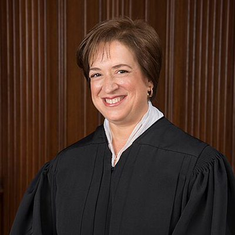

Elite universities see paths forward to ensure diversity on campuses, but change may be slow to come
By Isabel Meyers, Heather Wang, Xinyi Song, Sowparnika Namachivaya Vallatharasu April 1, 2024
When the Supreme Court struck down affirmative action last June, Chief Justice John Roberts left a narrow window for students to talk about race—only in their personal essays. The ruling has left admissions officers in a tailspin as they adjust their applications and their decision-making process. The essay is one of the few places applicants still have a chance to talk about different aspects of their identity or upbringing while still abiding by the law.
At Sarah Lawrence College, where students can apply using the Common Application, there is a new supplemental essay prompt they can choose to respond to that quotes the ruling directly. “Drawing upon examples from your life, a quality of your character, and/or a unique ability you possess, describe how you believe your goals for a college education might be impacted, influenced, or affected by the Court’s decision,” Sarah Lawrence asks prospective students.
Kevin McKenna, the vice president for enrollment and dean of admission and financial aid at Sarah Lawrence, wanted to give prospective students the option to talk about the Supreme Court decision in a new optionlal essay prompt this year/Credit: Jorg Meyer
Kevin McKenna, the vice president for enrollment and dean of admission and financial aid at Sarah Lawrence, said that college’s admissions team received a lot of thoughtful responses to this essay prompt and about the Supreme Court’s decision, but clarified that the new prompt was never meant to be a “work around for students to disclose their racial/ethnic identity or identities surreptitiously.” Most students who chose to respond to one of the three optional prompts picked one of the more academic-oriented questions instead. He also says that they never want prospective students to feel obligated to reliving past racial injustices in order to “be more likely” to receive admittance.
“Sarah Lawrence challenges our students to face real world, difficult topics head-on, and to think critically and analytically about hard topics in society,” McKenna says. “So we felt strongly that this essay prompt, which asks students to reflect on the Supreme Court’s decision and how it might impact their goals for college, was a way to signal both that diversity remains important to us, but also that we don’t shy away from exploring hard questions that don’t have easy answers.”
Akil Bello, the senior director of advocacy and advancement at The National Center for Fair & Open Testing (FairTest), says that this was a creative, and somewhat mocking, response to the Court’s decision. “I think that institutions are following the law in providing candidates with the opportunity to discuss their experiences on the way to higher education, as it involves discrimination and race, and how those things may have shaped their educational experiences,” Bello says. “And that’s the most direct way in which I’ve seen institutions address [the decision].”
Since the late 1960s, affirmative action programs have been the primary tool that selective universities used to help build a diverse student body. But that all changed when the Supreme Court, powered by the conservative majority, ended race-conscious admissions practices nationwide.
Buildings on Harvard University’s campus in Cambridge, Massachusetts, on Jan. 31, 2024. Harvard, the oldest and most selective college in the country, was at the forefront of a lawsuit that led to the overturn of affirmative action policies in higher education in June 2023. Credit: Heather Wang.
So where do universities go from here? Without the tools they relied on for decades to ensure equitable access to higher education for people of color, schools are grappling with how they can maintain and continue creating a diverse student body.
The targets of the two lawsuits filed by Students for Fair Admissions – a nonprofit legal advocacy organization founded in 2014 by conservative activist Edward Blum – were Harvard University, the country’s oldest private university, and the University of North Carolina, one the oldest public universities. The Supreme Court ruled that these two institutions’ use of affirmative action policies violated the Equal Protection Clause of the Fourteenth Amendment. Justice Roberts wrote that a student “must be treated based on his or her experiences as an individual not on the basis of race.”
Without the ability to see an applicant’s race, many universities have quickly pivoted to ensure students are aware they can still discuss their race in their personal or supplemental essays – both with or without diversity being mentioned in the essay prompts themselves. When an application is sent to a college admissions team, factoring in other data points such as income, zip code, first-generation status, among other identifiers, might help ensure equitable access to higher education for students of color. But there is no band-aid fix.
Admissions officers and higher education professionals are wary of the overturn and its implications, but are hopeful creative strategies relating to recruitment and retention can maintain and continue creating a diverse student body.
Why this year’s application forms look different
The challenge for admissions offices seeking to build a diverse student body differs from school to school. In particular, “elite” universities — the relatively small number of highly-selective schools whose graduates occupy positions of power in government and business and have historically struggled to represent a diverse nation — are looking for new ways to reach that goal without running afoul of the courts. Less selective schools that have traditionally better reflected their communities are grappling with what to do, if anything.
Many colleges, like Sarah Lawrence, are looking for solutions both practical and creative: from removing legacy admissions where children of alumni get preferential treatment – the majority of legacy students at top universities are white – to new recruiting tactics. But there is no silver bullet that will fundamentally alter the current admissions reality, and universities remain concerned about the prospect of more lawsuits if these solutions are interpreted as race-conscious admissions practices.
Hover over to schools’ logos and see what materials she need to submit for different schools.
University of Hawaiʻi at Mānoa
University of Illinois Urbana-Champaign
University of Massachusetts at Amherst
Sarah Lawrence College
SAT/CAT optional
High school grades/transcript
Essay(s)
Art portfolio (optional)
Letter(s) of recommendation
Interview
Common Application or other application portals.
Application fee
The University of Illinois Urbana-Champaign is slightly more selective than Sarah Lawrence, with admit rates a little above 40%. Doug Burgett, the interim director of undergraduate admissions, describes UIUC’s process as “holistic” in that they look at several different aspects of an application from test scores to letters of recommendation. At UIUC, students can apply directly to their intended major. This includes required supplemental essays that demonstrate why a student wants to pursue a certain course of study.
Burgett says that there can be anywhere from two to a dozen admissions staff assigned to a single application, and the conversations about admittance or rejection are lengthy and based on every element of their application. The first, and maybe most pertinent, factor is whether or not the admissions team thinks that student would be a good fit on campus.
“[T]he last thing we want to do is admit somebody who we don’t think is going to succeed,” he says.
Prior to the overturn, like most other moderately selective and elite universities, race and ethnicity were never the sole reason a student was accepted. But if an application bordered between rejection and acceptance, contextual information like race could benefit students of color.
“We used race [and] ethnicity as a plus factor,” Burgett explains. “So if someone was on the fence but they were an underrepresented student, it would probably push them toward a more positive decision. But we never admitted based on race alone.”
He says taking race-conscious admissions practices out of the equation “is not a huge adjustment” for him and the rest of his team. But from a recruitment and yield perspective, he explains how the admissions team at UIUC felt that the Court’s decision was “a little late in the game,” meaning that they had little time to change their recruitment strategy to better target students of color in communities that have been largely underrepresented in higher education. Most of their focus moving forward will be making sure UIUC representatives are able to reach students from these communities early on in the college admissions process.
Basic Assessment
After receiving Kayla’s application with all her information, schools begin to weigh different factors depending on what is important to them. At UH Mānoa, since personal statements were removed, more emphasis is placed on a student’s high school academic performance by requiring at least a 3.2 cumulative GPA and how they performed on a standardized test like the SAT or ACT (UH Mānoa ultimately is, however, test optional). Other schools may prioritize a student’s personal statement, extracurriculars, portfolios (depending on a student’s intended major) and letters of recommendation. UIUC for example doesn’t accept letters of recommendation, but encourages students to demonstrate through essays their passions and career goals.
Discussion
The admission office starts having conversations about students. This conversation might be relatively quick since their acceptance rate is high. Regardless, admissions officers will always discuss how students might fit on campus. However, in more selective schools like UIUC or Sarah Lawrence, the conversation often involves more nuance and details.
A decision is released but maybe more…
After several rounds of discussion, the admission office would make a final decision. Part of this discussion includes whether or not a student qualifies for any sort of scholarships. In more selective schools, more steps may be needed, such as interviews with admissions staff or school alumni.
“Everyone deserves access to higher education”
Michael Bastedo, a professor and associate dean in the Marsal Family School of Education at the University of Michigan, believes that it’s especially important that elite universities – schools whose graduates are disproportionately represented in the top rank of business and government – broadly reflect society. Prior to the overturn, race-conscious admissions practices were intended to address this issue of underrepresentation of racial minorities in higher education. According to Bastedo, this group of higher education institutions with highly selective admissions have “disproportionate power in our society.”
“It’s important from the institutional perspective to have an institution that represents society more broadly. If we have an institution that really reproduces inequality to a significant extent, that’s always going to be a delegitimating situation for that institution, right? They want to have a mission to serve all of society, not just a proportion of society.”
Michael Bastedo A professor and associate dean in the Marsal Family School of Education at the University of Michigan
Affirmative action had aimed to provide minorities more employment opportunities since 1961 when President John F. Kennedy issued Executive Order 10925, instructing government contractors to take “affirmative action” to make sure applicants or employees are treated “without regard to their race, creed, color, or national origin.” But affirmative action in higher education didn’t come into focus until the 1978 landmark Bakke decision when the Supreme Court decided that universities could use race, among other factors, when considering an applicant as long as they didn’t implement strict racial quotas.
Even before the Supreme Court’s decision in June, universities and admissions were never truly equitable. Racial minorities had been largely excluded from academia since Harvard University, the United States’ first and oldest college, was founded in Cambridge, Massachusetts, in 1636. For centuries, “equality was never really a factor in the admissions process,” says CJ Powell, the director of advocacy at The National Association for College Admission Counseling (NACAC).
Shereem Herndon-Brown, the founder and chief education officer of Strategic Admissions Advice and co-author of “The Black Families Guide to College Admissions: A Conversation about Education, Parenting, and Race,” says that the use of race in admissions was an important tool for encouraging diversity on campus since affirmative action programs first came into existence.
“But I understand that many schools are legally going to do what they’ve been told to do, which is not factor [race] in during their evaluation period,” he explains. “I think that’s damaging to the overall percentage of students who will be on campus next year who are Black and brown. I think universities are going to lose that authentic diversity.”
According to a report by The Education Trust, since 2000, Black enrollment at the top 101 most selective public universities across the country has decreased by nearly 60%. Part of this can be explained by the banning of race-conscious admissions practices for public universities in several states, such as California, Washington and Florida, all in the late 1990s.
In 1996, California prohibited affirmative action for public universities starting with the incoming class of ’98, and pledged to maintain diversity through other methods. Before that, the student bodies of elite schools such as UC Berkeley and UCLA were roughly representative of the California high school graduates who were eligible for university enrollment. Fifteen years after the ban statewide, school officials reported they hadn’t yet met any of their diversity, equity and inclusion goals, despite collectively spending more than half a billion on outreach and admissions alternatives.
The state’s public universities have made up some ground on equitable admissions without considering race in recent years. Regardless, the California school systems still enroll fewer Black and Latino students than represented in the state’s population and high school graduates.
Powell suggests that part of the push back against, and eventual collapse, of affirmative action roots itself in a collective sense of “entitlement” from the elite. Part of the false characterization of race-conscious admissions is the notion that under-qualified candidates, mostly Black and Latino students, are chosen because of their race and their race alone, effectively “taking” spots away from better suited white applicants. But, according to Powell, “That was never the case when race-conscious admissions [were] in effect.”
“I think you see this in the current culture wars, because there’s always this questioning of who is qualified,” he says. “And the notion that anyone who is not a white man can’t possibly be qualified in of their own merit to do certain things.”
Bello says the Supreme Court cases have an underlying assumption that race was the sole reason applicants of color received admittance to Harvard and UNC, and that the Court believed “that is a racist proposition.”
“And if you have 8% Black students and we've decided all of those Black students were admitted because of their race, the only way to prove that you stopped [using race-conscious admissions] is to lower that number,” Bellow says. “So now they’ve created a problem for the institution in which there is a legal threat hanging over their heads if they don't reduce the number of Black students.”
Why does what happens at elite universities matter?
CJ Powell/Courtesy of CJ Powell
At first glance, the court’s ruling would seem to impact admissions of all universities equally. But elite universities – highly ranked schools with a generally lower acceptance rate – could have the toughest time maintaining a diverse student body without the tool of race-conscious admissions compared to their less-competitive counterparts.
Graduates of these coveted elite academic institutions occupy some of the most powerful positions in the workforce from professors to politicians to journalists. A 2018 study found that the majority of The New York Times staff attended one of the 29 most elite universities. And eight of the current Supreme Court Justices graduated from either Harvard or Yale Law School (the ninth, Amy Coney Barrett, attended Notre Dame which is consistently ranked as one of the top law schools in the country).
All nine Supreme Court Justices came from just three elite law schools: Harvard, Yale and Notre Dame.
John G. Roberts, Jr.

Elena Kagan
Neil M. Gorsuch
Ketanji Brown Jackson
Clarence Thomas
Samuel A. Alito, Jr.
Sonia Sotomayor
Brett M. Kavanaugh
Amy Coney Barrett
Studies show that students who attend highly selective colleges are 44% more likely to reach the top 1% of the income distribution. Oiyan Poon, the co-director of the College Admissions Futures Collaborative at the University of Maryland, explains that there are only a fraction of four-year universities in the country that are considered rejective – meaning they reject more than 50% of their applicant pool. Diversity, then, has a disproportionate impact inside the walls of this small percentage of “elite” institutions.
And it looks different at less competitive universities. Nikki Chun, the vice provost for enrollment management at The University of Hawaiʻi at Mānoa is still reckoning with the aftermath of the Supreme Court’s decision. Unlike Sarah Lawrence, she actually removed the personal essays and letters of recommendation that had formerly been optional for the class of 2028.
Nikki Chun,the vice provost for enrollment management at The University of Hawaiʻi at Mānoa, reorganized UH Mānoa’s application process this past fall. Credit: Josémiguel Magno
Chun says there is no need to include the essays and letters of recommendation at her less-selective school because “those pieces [are] not materially valuable for our decision process and for our institution,” adding that these can be “barriers for students from under-resourced communities.” UH Mānoa, Hawai’i’s largest public university, has an in-state acceptance rate of 83%.
“For where we are and who we serve,” Chun explains, the school is “a natural hotbed for diversity,” meaning the racial diversity on campus accurately reflects the makeup of Honolulu, the community where UH Mānoa is located. This doesn’t mean that maintaining diversity in the wake of the Supreme Court decision isn’t important. In fact Chun says that none of this should be taken for granted and that “diversity is an inherent part of the learning process that you cannot substitute” for anything. However, removing the optional essay, from UH Mānoa’s perspective, might encourage more students of color to apply as the application process now has one less hoop to jump through.
Diversity also looks different at the University of Massachusetts Amherst. It is the state’s largest public university, with close to 30,000 students, and has an acceptance rate of around 65%, compared to less than 3.5% at Harvard. Massachusetts is roughly 62% white, which is reflected in the 2021 student body at UMass Amherst, with around 67% of their campus identifying as white.
Students in Cambridge, Massachusetts, walk through the historic Harvard Yard, on Jan. 31, 2024. Harvard’s class of 2027 is recorded to be around 42.% white, with only around 11% of students identifying as Black. Credit: Heather Wang.
While equity and inclusion remains important in UMass Amherst’s admissions process, ending race-conscious admissions practices is less likely to impact diversity since most of its students come from in-state.
Bastedo explains that admissions for competitive schools are, and always has been, a zero-sum game. Since these universities receive more applications that academically fit their standards than places they have to fill an incoming class, admissions teams have to “allocate those places in some sort of way that they find… equitable and defensible.” According to Bastedo, this process of selection effectively “reproduc[es] the stratification of race in particular.”
“If you’re at a less selective school or a broad access school, it isn’t much of a question about whether or not race is influencing your decision,” he says. “Your decision is… One, you’re either open access and everyone with a high school degree can enroll, or two, you are denying some students, but you’re denying them only because you think that they don't have the academic ability at this time to succeed in your college.”
Will universities “walk the talk?”
Following the ruling, competitive universities were quick to make statements stressing the importance of diversity in education, now more than ever.
“We reaffirm the fundamental principle that deep and transformative teaching, learning, and research depend upon a community comprising people of many backgrounds, perspectives, and lived experiences,” Harvard faculty – including former-President Lawrence S. Bacow wrote – wrote in an open letter after the ruling.
President James E. Ryan and Provost Ian Baucomhe of the University of Virginia, an elite public institution, echoed similar sentiments, “We will follow the law. We also will do everything within our legal authority to recruit and admit a class of students who are diverse across every possible dimension and to make every student feel welcome and included here at UVA.”
Having a campus that broadly reflects the community it serves isn’t just important for reputation’s sake. It has proven benefits for all students. Studies show that students work better in diverse environments, as it pushes them to engage critically with differing viewpoints and backgrounds.
Outside the classroom, research indicates that college diversity experiences are related to increased civic engagement. According to Powell, learning in an environment that challenges a student’s preconceived notions is crucial for developing critical thinking skills and democracy as a whole.
“[I]f we are not having diverse classrooms, that means various communities are being left out of a democratic process, of being trained to be good democratic citizens,” he says. “And that, to me, is even more dangerous because then that leads to the ever increasing polarization that we're see[ing].”
Further, diversity in higher education helps ensure diversity in institutions that have also historically reproduced racial inequities. Health disparities have only grown over the past two decades in the US – in 2021, the maternal mortality rate for Black women was 2.1 times the rate for white women – and health professions have struggled to maintain a diverse workforce. Studies show that greater health equity relies on diversity, which ultimately starts at the educational level.
“We know that… having a bachelor's degree is one of the few levers in our culture for socioeconomic stability and growth,” says Marie Bigham, the founder and executive director of the Admissions Community Cultivating Equity & Peace Today (ACCEPT) Group.
“It's really, really clear, especially in the most resourced colleges, the ones that can fund students the best [have] never really been reflective of the demographics of this country.”
Marie Bigham Founder and director of ACCEPT
“Are [universities] going to be able to… walk their talk?” Powell says. “I think you’re seeing more institutions start to really evaluate whether or not that policy is reflective of their language that they’ve been sending out to students.”
What other solutions to maintain diversity might replace race-conscious admissions?
Shortly after Ryan and Baucomhe’s address and the school removing indications of a prospect’s race, ethnicity and legacy status from applications, Virginia added additional personal essay prompts that will allow students to address factors related to race if they wish to.
Relying on personal essays to convey race and ethnicity produces different issues for students. Joan Casey, a Boston-based college admissions counselor, says that making students feel as though they need to use essays to talk about their race, and how race or other aspects of their identity have caused hardships, is an unfair “pressure” for students, even if the prompt isn’t necessarily centered around adversity.
The vice president of enrollment management at Bentley University, a private business school in Waltham, Massachusetts, Carolina Figueroa says being intentional about diversifying their student body, without race-conscious admissions, will remain at the forefront of their admissions process.
Figueroa points to their BentleyFirst program as one solution to ensure equity. Bentley now offers first-generation applicants in the state of Massachusetts whose family’s income is below a certain level the same tuition price as the public University of Massachusetts Amherst. “As a result of the actions we’ve taken in this area, the percentage of first-generation students in our incoming class of first-year students increased from less than 18 percent to 25 percent in a single year,” Figeuroa explained.
Powell says an easy fix to maintain equitable admissions is eliminating systemic application facets that perpetuate racial inequity such as early decision deadlines. Early decision candidates “tend to be the ones who have the… most access to resources, and that tends to skew white students and well-resourced students, which definitely is counterproductive to building diverse classes,” he explains, “because those are the kinds of students who have historically been able to attend higher education, particularly at selective institutions.”
According to Bastedo, without affirmative action, the perpetuation of racial stratification by early decisions will increase. Because some early decision applications are binding, underprivileged students are less likely to apply without knowing in advance what kind of financial aid package they will receive. These students often need to apply regular decisions to multiple universities to compare aid.
Powell and Bastedo both agree that a solution to uphold equity is to eliminate legacy admissions. A 2019 study indicated that 70% of legacy and athletic admits at Harvard were white. And as a group, they make up less than 5% of applicants, yet represent 30% of those admitted each year. Shortly after the overturn of affirmative action, some universities chose to retire legacy as a determining factor of an applicant, such as Wesleyan University.
But Powell and Bastedo are skeptical on whether other highly competitive universities, specifically Ivy Leagues, will abandon the practice as alumni donations are a large part of their revenue.
Removing barriers to entry such as early and legacy decisions could help universities promote diversity. But there are other more creative solutions as well. Powell says universities should invest time and energy into communities that have been historically underrepresented in higher education. This means thinking of recruiting outside the realm of high school college fairs. Powell suggests universities could visit churches in areas where religion is a cornerstone to Black and Latino communities. He says they could also attend fairs and festivals which helps students see colleges in a way that isn’t as “intimidating.” Making meaningful connections with these communities will actually empower high school students to apply, to make them feel as though they can find a place of belonging on an elite campus.
“It’s just about being much more genuine with these communities because they can spot when you’re being fake and [when] you’re just... check[ing] the box from a mile away,” Powell says.
Bastedo explains that college admissions need to better understand the gaps in the public high school education system.
“It’s still really important for admissions officers to understand the inequalities in our high school system and just our educational system more broadly, that students come from really widely varying contexts in terms of what access they have to the things that admissions officers are valuing.”
This could be as simple as being acquainted with the unequal distribution of AP and International Baccalaureate (IB) courses around the country. And this solution is “completely legal,” he adds.
It’s also critical that universities find ways to make sure underrepresented students have a support system once they arrive on campus.
“You can’t just recruit, you have to have systems in place to make sure those students get to college, and that there are retention programs,” Joan Casey says. It matters little if the campus is diverse but students of color feel as though they do not belong there or that the community isn’t intended for them.
Savion Thompson, a student at Northeastern University, describes feeling taken aback when the ruling was announced. Originally from Reidsville, North Carolina, where the median household income is less than $35,000, Thompson says the resources available to the high school system in Rockingham County are limited.
Savion Thompson,the president of the Northeastern University Black Athlete Caucus (NUBAC), stresses the importance of students of color finding communities of belonging on campus./By Jim Pierre
“And so seeing that affirmative action was being taken away would kind of seem like a slap in the face to people of lower income communities, which do impact minorities a lot,” he says.
Thompson, a combined health science and business administration major, is a member of the track and field team at Northeastern. His involvement in athletics eventually led him to becoming the president of the Northeastern University Black Athlete Caucus (NUBAC). Thompson says ending race-conscious admissions indicates that “there’s no person of color with a seat at the table, [and] it will stay that way.”
Ultimately, Poon likens equity in higher education to a Möbius strip. “[Y]ou could change one little thing in the system, but unless you look at everything in totality, [by] changing one thing, the system will evolve and continue perpetuating inequalities,” she says.
And while some universities are attempting to address these issues and develop solutions, others have responded in ways that actually make it harder for students of color to be admitted or feel encouraged to apply. Poon points to Western Illinois University which, immediately following the overturn, revoked scholarships specifically for incoming students of color in fear of more potential lawsuits even though the Department of Education and Department of Justice made clear that the ruling has nothing to do with scholarships. Following backlash, the university reinstated these scholarships, but this initial reaction still signals to some students that they do not belong there.
“Many of my Black students are now applying to more HBCU than they have in the past. Not as a default because they can't get into PWIs, per se, but because they understand the cultural significance of it. And, you know, if these places want me and the other places don't, then I should go where I'm wanted.”
Shereem Herndon-Brown Founder and chief education officer of Strategic Admissions Advice
A predominately white institution (PWI) is defined by the U.S. Department of Education as a university that has 50% or more enrollment from white students. It is also used to refer to any university whose enrollment has been “historically white.”
Herndon-Brown underscores the importance of redefining what success means in obtaining a higher education. This process of interrogating success comes from top-down as well as bottom-up.
“[T]he misinformation that kind of floats out there about college admissions really affects, erodes, dare I say, the confidence of students and doesn’t allow them to sometimes look at the right schools for the right reasons,” says Herndon-Brown.
We don’t really know the impact (for now)
Counselors and higher education professionals around the country were worried that the overturn of affirmative action would have, what Powell calls, a “chilling effect” on high school applicants of color. However, he says that according to some reports, that wasn’t the case. But this does not ensure that universities will actually follow through with implementing strategic recruitment and application strategies to maintain diversity.
“We’re going to see what the difference between acceptance and yield is going to be as these classes continue to get shaped,” Powell says. “Our hope is that it is reflective of the increase [in] students of color who've applied.”
Kayla’s story is not unique. She represents 12.8% of all Black high school students in the country who may be wondering what the college process looks like since the ending of race-conscious admissions. As of 2021, the majority of all high schoolers in the U.S. identified as non-white. While not all of them intend to receive a higher degree, the application experiences for those who do have been drastically altered. Kayla is just one of millions wondering what comes next in their education journey.
Even if universities are able to establish diversity on campus without race-conscious admissions, instead using tools like the personal essay or removing legacy or early admissions, there is still a major barrier to entry this year: Will students from underrepresented communities even be able to afford tuition?
To access federal grants and loans, students and their families must complete the Free Application for Federal Student Aid (FAFSA) form. Normally, this form opens in October for graduating seniors. But this past fall, the Department of Education (ED) announced it wouldn't open until December. It finally went live Dec. 30, but technical glitches locked out many users and students born in the year 2000 weren’t able to submit. Additionally, parents without social security numbers were unable to file either. Colleges are supposed to receive these forms late January, but the ED again announced that issues with the form would delay delivery until mid-March.
This FAFSA fiasco has left millions of students in financial limbo, as colleges are releasing admissions decisions but applicants still remain without essential loan and grant information that affects which institutions they can attend. With May 1 being a typical decision due date for students, many experts are worried about a drop-off in applications.
At the time of The Emancipator’s conversation with Chun late February, she said that UH Mānoa had seen application deviations from a normal year with a delay in acceptance responses. She points to FAFSA as the main reason. “We as a higher education field have become accustomed to students having this information by this time of the year,” she says. But students are unable to make a decision and to inform colleges without knowing what their financial aid package includes. “But this year, because everybody got delayed, every school is in the same boat,” she says. “We have just been watching families and students, waiting until they can see financially [what their choices are].”
The impact of the Court’s ruling is ultimately “theoretical and uncertain,” says Bello. He’s positive, however, that the delays in FAFSA will most definitely make a difference in college diversity and representation, “I would actually say that the financial implications of the changes going on this year are probably as significant, if not more significant, than the ruling from the Court.”


.png)